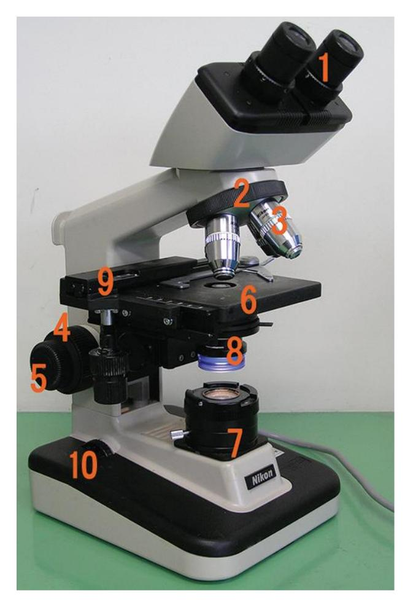
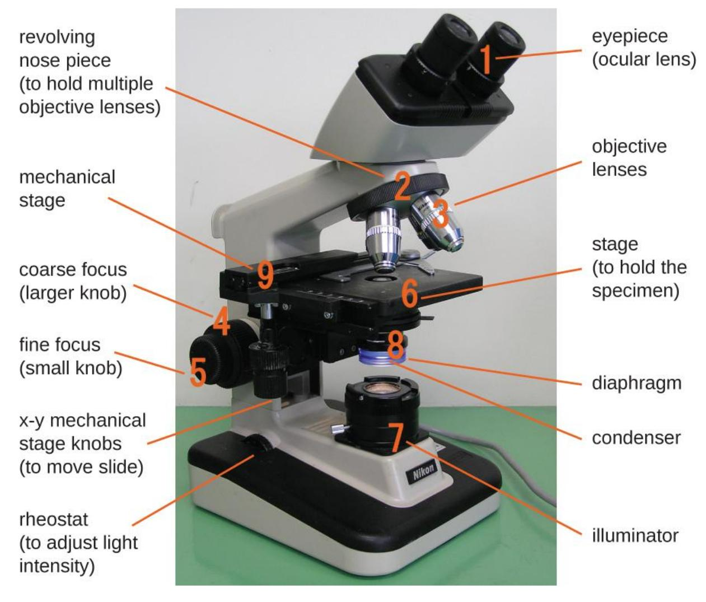
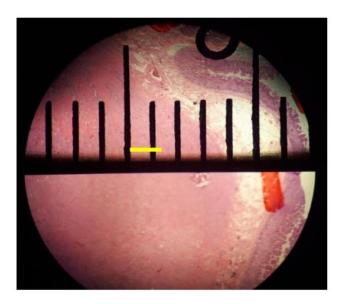

2 Use of the Microscope
2.1 Objectives
In this laboratory session you will learn to use an essential tool in the biologist’s kit, the compound light microscope. Carefully read and closely follow the following instructions before you begin this activity in order to avoid damaging the microscope in your care.
2.2 Your objectives for this lab are:
- Identify the parts of the microscope and list the function of each.
- Demonstrate the proper techniques for use, care, and transportation of the microscope.
- Define and demonstrate a working understanding of the concepts of total magnification, resolution, parfocal, field diameter, depth of field, and working distance.
- Apply microscopy skills to properly focus, view, and manipulate a variety of histology slides.
- Explain why the microscope’s field of view decreases as you increase the magnification.
2.2.1 Terms to Learn:
- Arm
- Neck
- Body
- Base
- Ocular lens
- Objective lens
- Rotating nosepiece or Turret
- Course and Fine focus knobs
- Mechanical stage
- Mechanical stage knobs
- Illumination light source
- Iris diaphragm
- Condenser adjustment knob
2.2.2 General Rules:
- Always carry the microscope using two hands. The easiest way to do this is to place one hand holding the arm while the other hand is supporting the base.
- Do not touch the objective lenses. The lenses should originally be set in the scan position and when stored the microscope scanning lens should be set in place.
- If needed, the ocular and objective lenses must be cleaned with a special lens paper and lens cleaning solution.
- Report any malfunctions of the microscope to your instructor, do not attempt to repair the scope yourself.
2.2.2.1 Returning the Microscope to the Cabinet.
- Lower the stage.
- Rotate the turret so that the scanning (4x) lens is in position over the stage.
- Remove the lens from the stage and clean the lens before replacing it in its storage box.
- Secure the cord by wrapping it around the correct holder on the back of the microscope.
- Replace the dust cover.
- Carry the microscope back to the storage cabinet with two hands!
2.3 Prelab Activities

Figure 2.1 Components of a Typical Bright Field Microscope.
2.3.1 Prelab Activity 2.1
Identify the following parts and functions of the microscope above.
| 1. | 6. |
| 2. | 7. |
| 3. | 8. |
| 4. | 9. |
| 5. | 10. |
2.4 Prelab Activity 2.2
Match the microscope part with its definition.
| Microscope Part | Definitions |
|---|---|
| ________________ Condenser | (a) The light source in the bottom of the microscope, also known as the illuminator. |
| ________________ Revolving Turret | (b) Also known as the body- carries the oculars. |
| ________________ Mechanical stage\ | (c) The microscope supports. |
| ________________ Ocular lens | (d) The part connecting the head and the base. |
| ________________ Power switch | (e) The lens closest to the eye |
| ________________ Iris diaphragm | (f) The major lenses closest to the specimen |
| ________________ Arm | (g) Also known as the nosepiece-holds the objective lenses |
| ________________ Depth of field | (h) Knob that makes large scales adjustments in the focus |
| ________________ Fine focus | (i) The knob that makes small adjustments in the mechanical stage. |
| ________________ X-Y stage controls | (j) Set of lenses that collect and focus the light onto the specimen. |
| ________________ Light source | (k) Controls the amount of light reaching the specimen. |
| ________________ Total magnification | (l) Controls that move the slide vertically and horizontality on the stage |
| ________________ Head | (m) Calculated by multiplying the ocular magnification by the objective magnification. |
| ________________ Base | (n) The visible area one can see through the oculars. |
| ________________ Objective lens | (o) The measure of the thickness or the specimen in focus |
| ________________ Course focus | (p) The switch used to turn the microscope on and off. |
| ________________ Field of view | (q) The section in which the specimen is placed for viewing. |
2.5 Lab Activities
2.6 Magnification
Student scopes used in our classes have four objective lenses (i.e., those that are closest to the specimen); scanning, low power high power and oil immersion. The set of lenses closest to the eye are the ocular lenses.
2.7 General Procedures
2.8 Microscope components
2.9 Lab Activity 2.1
- Go to the storage cabinet and obtain a microscope, with two hands bring the microscope back to your workbench. Clear off the work bench so that you have plenty of room to use the microscope and take notes.
- Also, obtain the following slides to use later in this lab.
- A slide containing a metric ruler glued to it,
- The letter “e,”
- A slide of three crossed colored threads
- Clean the ocular and objective lenses and reset the turret so that the scanning lens is in position.
- Plug the microscope into the plug on your workbench.
- Identify the parts of the microscope and label them with labeling tape.

Figure 2.2 Components of a Typical Bright Field Microscope, labelled.
Key: Components of a typical bright field microscope.
- Ocular lens
- Head
- Revolving nose piece (turret)
- Objective lens
- Arm
- Mechanical stage
- Stage clips
- Diaphragm
- Condenser
- Fine focus
- Course focus
- X-Y Mechanical stage knobs
- Light source (Illuminator)
- Rheostat
- Illuminator switch
2.10 Lab Activity 2.1
Record the magnifications of the lenses on your microscope in the table below.
| Lenses | Ocular Lens | Objective lens | Total Magnification |
|---|---|---|---|
| Scanning Red lines | |||
| Low power: dry Blue lines | |||
| High Power: dry Yellow lines | |||
| Oil Immersion: oil Black/white lines |
To determine the total magnification simply multiply the ocular lens magnification by the objective lens magnification. For example, if the Ocular lens magnification is 10X and the scanning lens magnification is 4X then the total magnification will be 40X. Complete the table above.
2.11 Focusing on Specimens
For biology 109 labs you will only be focusing on a total magnification of 400x. You will be required to use the oil immersion lenses (1000x) in your Introduction to Biology (110) and Microbiology (230) classes. For your first practical you will have to focus on a specimen at a total magnification of 400x. You will have two minutes to complete this task.
Focusing on a specimen may be broken down into a three-step process.
2.11.0.1 1. Scanning Lens (4x):
- Begin focusing on a specimen using the Scanning lens. First, adjust the mechanical stage so that it is at its lowest position. You can do this by turning the course focus knobs away from your body.
- Turn on the light. And adjust the ocular lenses so that your field of view is a circle of light.
- Place and center the specimen on the mechanical stage.
- Look into the oculars and slowly raise the mechanical stage by turning the course focus knob towards your body. Stop when it comes into focus. You may adjust the focus using the fine focus knob that is needed.
- Center the specimen. Adjust the X-Y stage knobs so that your specimen is in the center of your field of view. This position will enable you to see the specimen when you adjust the lens to the next higher magnification. If the specimen is
found to the side, then you may lose the specimen from your field of view when you adjust your objective lens to the next higher magnification.
2.11.0.2 2. Low Power (10x)
- Next while looking into your objective lenses turn the turret clockwise (to the right) to 10x power.
- Adjust the focus. Do not use the course focus knob to adjust your focus. Only use the fine focus knob at this point. If you use the course focus knob, then you may adjust your focus too far out of focus and may have to start at the Scanning power again.
- Center your specimen
2.11.0.3 3. High Power (40X)
- Finally, switch to the high-power lens (40X) by turning the lens to the right (clockwise). At this point only use the fine focus to adjust the focus.
- If the color of light is too yellow, you may adjust the rheostat to change the color of light to t white light.
- If the light is too dark, you may adjust the diaphragm.
2.12 Measuring and Calculating the Field of View
The field of view is the area of the area of the specimen you can see through the ocular lenses. When you adjust your magnification, the diameter will decrease at higher magnifications. The image below, figure 2.3, is an example of a field of view.
How to determine the field of view:
- Obtain a prepared slide that has a ruler and place it onto the stage.
- Adjust the ruler so that the edge of the ruler is visible as a series of tic marks/lines that lie across the diameter or the field of view as in the figure below.

Figure 2.3 Field of View Diameter Measured in a Microscope with a Metric Ruler.
- Arrange the slide so that the horizontal line is aligned along the midline of the field as seen above. Align one of the vertical lines so that it is at the edge of your field of view, as you can see on the right side of the picture. The space between the leading edge of the horizontal lines is 1 mm in distance, see the yellow bar.
- Measure the distance of the field of view for the scanning lens (4X)
- ________________ mm.
- ________________ um
- Measure the distance of the field of view for the low power lens (10x)
- __________ mm
- __________ um
When you use the high-power and oil-immersion lenses you should not be able to measure the field of view directly. At this point you will have to calculate the field of view. This calculation is a simple conversion using the formula below:
Conversion Formula: (Diameter of the field; A) X (Total Magnification: A) = (Diameter of the field; B) X (Total Magnification: B)
In this case “A” represents the known field information of the measured field of view of either the scanning or low-power magnification and “B” stands for the information of the new or unknown lens magnification (e.g., high-power or the oil immersion lenses)
- Determine the distance of the field of view for the high-power lens (40X)
- ________________ mm.
- ________________ um
- Determine the distance of the field of view for the oil-immersion lens (10X)
- __________ mm
- __________ um
2.13 Focusing Exercise(s)
- Letter “e” exercise
- Obtain a letter “e” slide and place it on the mechanical. Note the position of the “e.” Draw and label it on the page in back.
- Center the “e” and look at it through the oculars. Draw this “e” and label it.
- Describe the differences there are between the two ’e’s.
- Depth of field: examination of different colored threads
- Obtain a slide of three crossed threads.
- Place the slide onto the stage and with the scanning lens, focus on the threads using your fine focus. Decide which thread is on top, middle and the bottom.
- Now change your magnification to the 100x low-power lens. Find the top thread and focus on the bottom thread. Do you have to move the adjustment knob more or less than you did with the scanning lens? __________________
- Finally change your objective lens to the 400x high-power lens. With this magnification each thread may take up the entire field of view. Is the entire thickness of the thread in focus as it was under the scanning lens? _____________. What does this tell you about the depth of field while using the high-power lens? ______________
2.13.0.1 Examining tissues
- Your instructor will direct you to observe a series of tissue slides to practice your technique.
- Practice viewing the slides at a total magnification of 40X, 100X, and 400X.
2.13.1 End of Lab
- Clean off the slides you used and return them back to their proper storage trays.
- Turn off your microscope, unplug your microscope and wrap the cord around its holder or base.
- Rotate the lenses so that the scanning lens is in the viewing position.
- Lower the microscope stage to its lowest position.
- If available put the dustcover over the microscope.
- Return the microscope back to its proper storage cabinet.
2.13.2 Troubleshooting
- The image is too dark!
- Make sure the microscope is plugged in.
- Make sure that the plug is functioning.
- Make sure your light is on.
- Make sure that the dimming rheostat is turned up and not on off.
- Adjust the diaphragm,
- Adjust your rheostat for a whiter light.
- I cannot use both eyes to view the slide, or I must close one eye to use the microscope.
- Move your head back from the oculars you may be too close.
- Adjust the oculars either closer together or apart until you see a single image in the microscope.
- There is a spot in my viewing field- even when I move the slide the spot stays in the same place!
- Your lens is dirty. Use lens paper to clean the objective and ocular lenses. The ocular lens can be removed to clean the inside. Only use lens paper because a cotton shirt or regular paper may scratch the lens coating.
- I cannot see anything under high power!
- Remember the steps,
- If you cannot focus under scanning and then low power, you will not be able to focus anything under high power.
- Remember to center the specimen in the middle of the field of view before switching to a higher power.
- Remember the steps,
- Only half of my viewing field is lit, it looks like there is a half-moon in there!
- You do not have your objective fully clicked into place.
- Adjust the condenser.
- I see my eyelashes!
- You are too close to the objective, so move your head back a little.
- I cannot get a clear image of my specimen.
- Make sure that the slide is not flipped upside-down on the stage.
- This gives me a headache!
- Try adjusting your focus on your right first then adjust the focus on your left eye to adjust for any focal differences between the two eyes,
- Try adjusting the ocular distance,
- Check that the intensity of your light is not too high or too low.
- Finally, take a break when needed! Chapter 2: Microscopy Glossary
| Term | Definition |
|---|---|
| binocular | a microscope having two eyepieces |
| brightfield microscope, | a compound microscope with two or more lenses that produce a dark image on a bright background. |
| coarse focusing knob | used for large-scale movements with 4⨯ and 10⨯ objective lenses |
| condenser lens (located below the stage), which | focuses all of the light rays on the specimen to maximize illumination. |
| fine focusing knob | used for small-scale movements, especially with 40⨯ or 100⨯ objective lenses. |
| fixation | the process of attaching cells to a slide. |
| illuminator | provides light for the brightfield microscope |
| lens | a medium with a curved surface that refracts and focuses light to produce an image. |
| magnification | the ability of a lens to enlarge the image of an object when compared to the real object |
| monocular microscope | a microscope having a single ocular lens |
| objective lenses | the lenses far end of the body tube |
| ocular lens | the eyepiece of a microscope |
| oil immersion lens, | a special lens designed to be used with immersion oils. |
| refraction | occurs when light waves change speed and direction as they pass from one medium to another. |
| resolution | the ability to tell that two separate points or objects are separate. |
| rotating nosepiece, also known as the revolving turret, | sits below the head of the microscope and locks the objective lens into position over the stage aperture by rotating in either direction. |
| stage | (a platform) of the microscope total magnification is the product of the ocular magnification times the objective |
| Total magnification | (ocular magnification × objective magnification) |
| wet mount | slide preparation in which the specimen is placed on the slide in a drop of liquid. |
| x-y mechanical stage knobs. | These knobs move the slide on the surface of the stage, but do not raise or lower the stage. |
©2018 Rice University. Textbook content produced by OpenStax is licensed under a Creative Commons
Attribution 4.0 International License (CC BY 4.0).
If you use this textbook as a bibliographic reference, please include
https://openstax.org/details/books/microbiology in your citation.